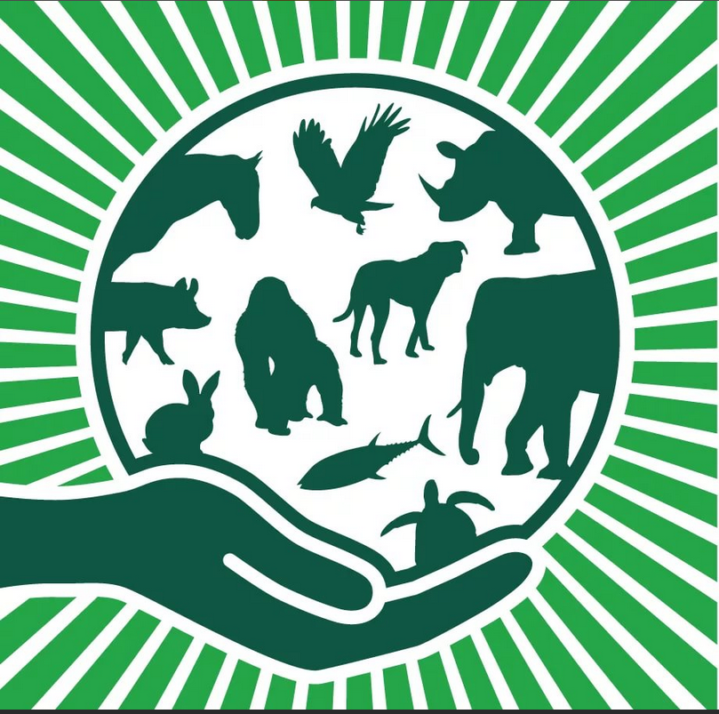
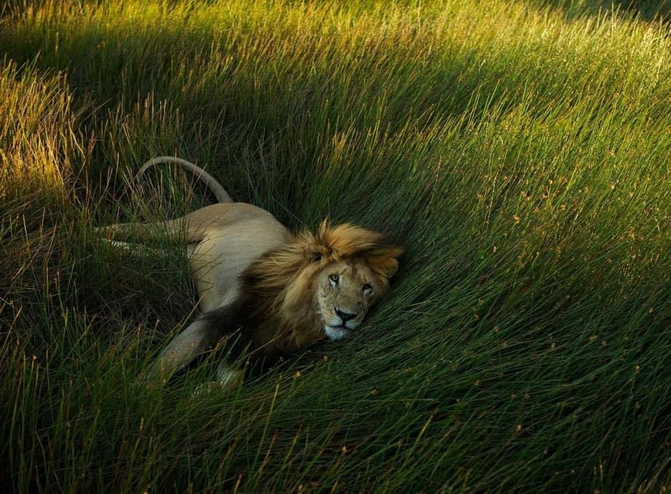
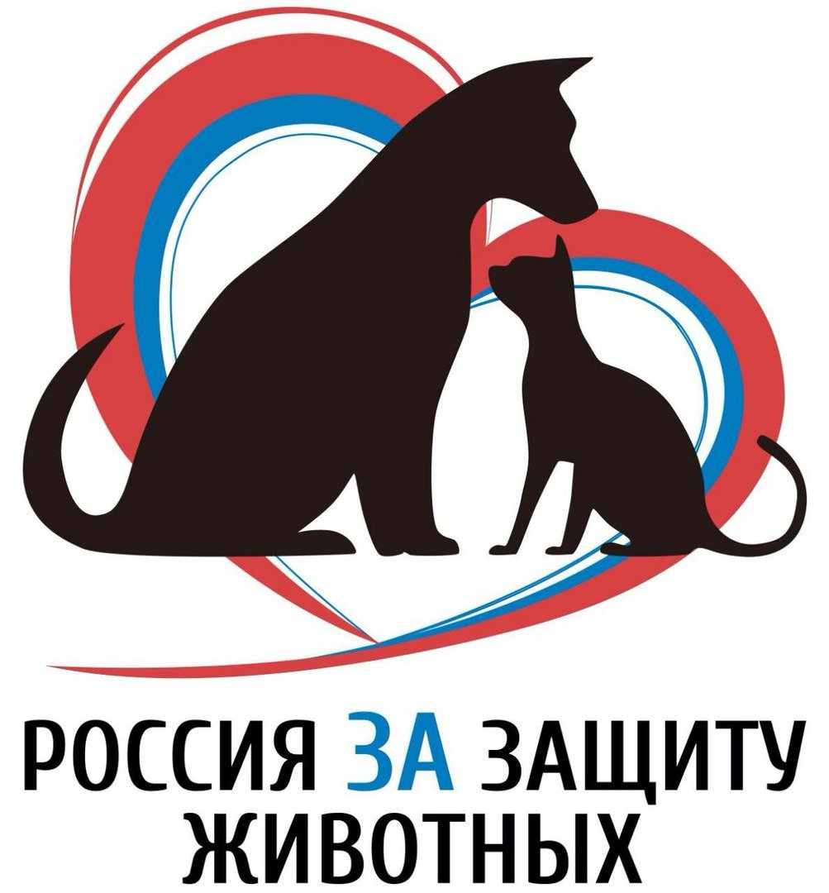

Зоозащита
Защита животных (зоозащита) — вид деятельности, направленной на улучшение содержания и обращения с животными, предотвращение жестокого обращения с животными.
Среди современных концепций защиты животных различают благополучие животных, подразумевающее контроль за психологическим и физическим благополучием животных, и права животных, некоторые сторонники которых считают недопустимым отдельные разновидности традиционного использования животных человеком в своей хозяйственной деятельности. Они предлагают не рассматривать животных в качестве своей собственности, выступая главным образом против эксплуатации и умерщвления животных.
История
Первые упоминания об охране животных относят к Ашоке.
В христианстве, а также в исламе и иудаизме, забота о своих животных — обязанность их владельцев, предусмотрены правила по уходу за ними и регламент убоя скота, предназначенный для ограничения страданий, боли и страха животных.
В 1959 году было создано Международное общество защиты животных (ISPA). В 1981 году оно, объединившись со Всемирной федерацией защиты животных (WFPA), было преобразовано во Всемирное общество защиты животных (WSPA).
Специальный курс законодательства о животных преподается в 113 из 180 школ права в США, в 8 школах права Канады и обычно включается в университетские курсы по философии и этике.
Пять свобод
Используемая во многих странах система оценки благополучия одомашненных животных была разработана в Великобритании Советом по охране сельскохозяйственных животных в 1977 году. Впервые упоминание о пяти свободах встречается в декабре 1979 года в пресс-уведомлении FAWC, незадолго до этого учрежденного правительством Великобритании.
Прежде, в 1965 году, правительством Великобритании было инициировано расследование благосостояния животных, используемых в интенсивном животноводстве. Отчасти расследование стало ответом на выход в 1964 году книги Рут Харрисон «Живые машины». По итогам доклада профессора Роджера Брамбелла, которому было поручено расследование, в 1967 году был создан Консультативный комитет, в 1979 году преобразованный в Совет по благополучию сельскохозяйственных животных.
Первоначально правила, переработанные позже в концепцию пяти свобод, представляли собой рекомендацию и звучали следующим образом: животным необходимы свобода поворачиваться, ухаживать за собой, вставать, ложиться, вытягивать свои конечности.
Пять свобод включают:
Свободу от голода и жажды — путём предоставления доступа к воде и еде, которые поддерживают хорошее здоровье и активность.
Свободу от дискомфорта — путём предоставления соответствующей среды для проживания, включая жилище и место для сна и отдыха.
Свободу от боли, травм или болезни — путём предоставления превентивных мер или ранней диагностики и лечения.
Свободу естественного поведения — путём предоставления достаточного места, соответствующих благоприятных условий и приспособлений, а также компании себе подобных.
Свободу от страха и стресса — путём обеспечения соответствующих условий и отношения, которые исключают моральные страдания.
«Пять свобод» включены во Всемирную декларацию благосостояния животных (Universal Declaration on Animal Welfare). Согласно этой Декларации, эти «пять свобод» должны быть обеспечены животным, содержащимся в условиях неволи.

Современная ситуация в отношении защиты животных в России
Борцы за права животных добиваются принятия разработанного ими специального закона, защищающего животных от жестокости, однако статья «Жестокое обращение с животными» была введена в Уголовный Кодекс РСФСР в марте 1988 года, также существует аналогичная статья и в современном УК РФ. Проект закона «О защите животных от жестокого обращения» был разработан в России во второй половине 1990-х годов. Основным разработчиком стала глава Центра этичного отношения к животным, идеолог прав животных, основоположник веганского движения в России Татьяна Павлова. В 1999 году проект закона был принят Государственной думой в трёх чтениях и одобрен Советом Федерации. Но в 2000 году президент Путин наложил на проект вето с формулировкой «Нет собственного предмета правового регулирования», отправив закон на доработку. Однако в последующие 8 лет закон не дорабатывался и в 2008 году был снят с рассмотрения Государственной думой. 27 декабря 2018 года президент России Владимир Путин подписал принятый Госдумой закон об ответственном обращении с животными. Новый закон регулирует нормы и правоотношения в целях защиты животных, а также ради соблюдения принципов гуманности, обеспечения безопасности и иных прав и законных интересов граждан при обращении с животными. В настоящее время в России действуют Федеральный закон «О животном мире» и Федеральный закон «Об охране окружающей среды»
Россия продолжает входить в число трёх стран, разрешающих отлов диких животных капканами. На российских зверофермах животные умерщвляются запрещённым для использования в этих целях в странах Европы дитилином, вызывающим их мучительную гибель от 20-минутного удушья. При этом Минсельхоз заявляет по этому поводу: «Понятие „жестокость“ на пушных животных не распространяется». В России, в отличие от ряда стран, не запрещена продажа собачьего и кошачьего меха.
В России популярны собачьи бои, возродились и птичьи бои (петушиные, гусиные). В 1880 году в Нижнем Новгороде местный губернатор издал распоряжение о запрете гусиных боев на Арсенальной площади, однако после этого они проводились в других местах нелегально, а затем стали проводиться в соседнем городе Павлово, где они превратились в традицию, существующую и поныне, против которой выступают защитники животных.
В России также стали популярными так называемые «притравочные станции», где на диких животных натравливают охотничьих собак с целью дрессировки, что, по убеждению зоозащитников, заканчивается увечьями диких животных, а нередко и их гибелью.
